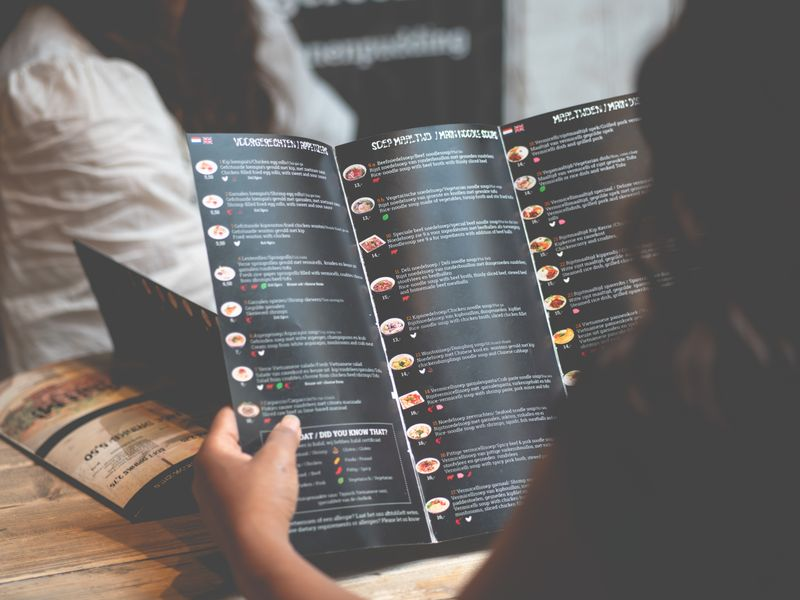

What is the difference between a starter and a main course?
Which of these nouns are uncountable: rice, menu, water, dessert, bread? How can we count them (“a glass of…”)?
How can a waiter politely suggest a dish? Give two different phrases.
What will the chef do if a guest asks for a halal meal?
Name three dietary terms from this unit and explain what they mean.
Which verbs do waiters use during service? Give at least four.
Complete the sentence: “If the buffet closes early, the guests …” — which tense do we use in each part of a First Conditional?
19. You are a new waiter at a hotel restaurant. Write your first training-blog post called “My Three Rules of Good Service” (8–12 sentences). Use the plan below.
Introduction: who you are and where you work (1–2 sentences).
Rule 1 — preparation: what you will do if a guest has an allergy or follows a halal / vegetarian / gluten-free diet (use the First Conditional).
Rule 2 — polite suggestions: include at least two phrases such as “Why don't you try…?” or “May I recommend…?”.
Rule 3 — attention at the table: use service verbs (serve, refill, pour, clear).
Conclusion: one more First Conditional about what will happen if you follow your rules. Use at least three First Conditional sentences in total and six words from this unit.
20. Creative task: design a one-page dinner menu for the Registan Terrace Restaurant. Include the sections Starters, Main Courses, Desserts and Beverages (at least two items each), mark dishes with V (vegetarian), H (halal) and GF (gluten-free), and add one “chef's suggestion” line using polite suggestion language.

Self-check: tick what you can do now.
I can name the main parts of a restaurant menu and food categories.
I can use countable and uncountable nouns with some, any, much, many, a few and a little.
I can make polite suggestions to restaurant guests.
I can use the First Conditional to talk about real situations in food service.
I can understand and respond to dietary needs such as allergies, halal and gluten-free.